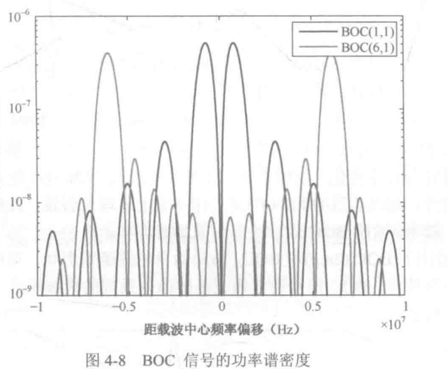

1. 本节主线：先看见频谱为什么会分裂
BOC 调制最容易让人迷惑的地方，是它的功率谱密度最大值不再位于载波中心附近，而是分裂到载波中心两侧。教材 4.3.2 要说明的正是这件事。
先用一句话抓住主链：
\[ \text{方波副载波} \longrightarrow \text{奇次谐波} \longrightarrow \text{频谱搬移到 }\pm f_s \longrightarrow \text{主瓣、旁瓣与零点网格} \]
教材给出的正弦相位方波副载波是
\[ \gamma(t)=\operatorname{sgn}\left[\sin(2\pi f_s t+\psi)\right] \tag{4.11} \]
BOC 信号可以看成 BPSK-R 扩频码片波形乘以这个方波副载波。时域相乘，对应频域卷积，所以教材写成
\[ P_{\mathrm{BOC}}(f) = P_{\mathrm{BPSK-R}}(f)*\Gamma(f) \tag{4.12} \]
其中
\[ \Gamma(f)=\mathcal{F}\{\gamma(t)\}. \]
方波副载波的关键性质是奇谐性：平移半个副载波周期后符号反转。若把完整副载波周期记为 \(T_{\mathrm{per}}\)，可写成
\[ \gamma(t)=-\gamma\left(t+\frac{T_{\mathrm{per}}}{2}\right). \tag{4.13} \]
下文为了和式 (4.15)–(4.18) 的谱公式保持一致，把方波电平保持不变的半周期记为
\[ T_s=\frac{1}{2f_s}. \]
于是奇谐性也可理解为
\[ \gamma(t)=-\gamma(t+T_s). \]
因为方波只含奇次谐波，所以 \(\Gamma(f)\) 是一串线谱，只在
\[ f=\pm(2k+1)f_s,\qquad k=0,1,2,\ldots \]
附近出现奇次谐波项，线谱间隔为 \(2f_s\)，包络近似服从 \(\operatorname{sinc}(\pi fT_s)\)。这就解释了为什么 BOC 的频谱会从中心频点向两侧搬移：它是在用方波副载波的奇次谱线去搬移原本的 BPSK-R 频谱。
功率谱密度由频谱与其共轭相乘得到：
\[ G_{\mathrm{BOC}}(f)=P_{\mathrm{BOC}}(f)P_{\mathrm{BOC}}^*(f). \tag{4.14} \]
下面的问题就变成：怎样从一个码片内的方波片段，严格算出 \(P_{\mathrm{BOC}}(f)\)，再得到式 (4.15)–(4.18)？
2. 符号约定：\(T_c\) 管码片，\(T_s\) 管副载波片段
码片速率为 \(f_c\)，码片周期为
\[ T_c=\frac{1}{f_c}. \]
副载波频率为 \(f_s\)。因为 BOC 副载波是方波，它每半个周期翻转一次，所以单个方波电平片段的长度为
\[ T_s=\frac{1}{2f_s}. \]
调制阶数 \(M\) 就是一个码片里包含多少个这样的半周期片段：
\[ M=\frac{T_c}{T_s}=\frac{2f_s}{f_c}. \]
后面会反复用到两个等价关系：
\[ T_c=MT_s,\qquad 2f_s=Mf_c. \]
这两个式子也可以从“一个码片里装了多少个半周期”来理解。\(T_c=MT_s\) 说明：一个扩频码片的时长 \(T_c\)，正好由 \(M\) 个方波副载波半周期 \(T_s\) 拼起来。再从频率角度看，方波副载波频率为 \(f_s\)，由于一个周期包含两个半周期，所以“半周期片段”的翻转速率可理解为 \(2f_s\)；码速率为 \(f_c\)，两者之比就是
\[ \frac{2f_s}{f_c}=M. \]
因此 \(2f_s=Mf_c\) 的含义也很直接：方波副载波半周期片段的速率是码速率的 \(M\) 倍，而 \(M\) 本身就表示一个扩频码片内有几个方波副载波半周期。
这个定义看上去只是符号选择，但它会让推导极其整齐。若把完整方波周期当作基本片段，每个码片内的片段数会多出一个 \(1/2\)；而把 \(T_s\) 定义为半周期后，一个码片内正负电平的翻转次数就直接由 \(M\) 表示。
这里还有一个重要直觉：时域片段越宽，频域结构越窄；时域片段越窄，频域结构越宽。傅里叶变换的尺度性质可写为
\[ x\left(\frac{t}{a}\right) \longleftrightarrow aX(af),\qquad a>1. \]
也可以用两个极端例子来理解这件事：
- 时域是冲激函数 \(\delta(t)\)：
- 冲激在时域中极窄，可以看成在极短时间内发生无限剧烈的变化。
- 要拼出这种突变，需要所有频率的成分一起参与。
- 所以频域表现为常数 1，也就是每个频点都有分量，频谱非常宽。
- 时域是常数 1：
- 常数 1 是完全不随时间变化的直流信号。
- 它不需要高频分量来描述。
- 所以频域只在 \(f=0\) 处出现一个冲激，频谱非常窄。
- 因此，时域和频域的宽度是互相对偶的：
- 时域越窄，频域越宽。
- 时域越宽，频域越窄。
也就是说，把时域信号拉宽 \(a\) 倍，频谱会在频率轴上压窄 \(a\) 倍。这就是为什么 \(T_c\) 与 \(T_s\) 同时出现在谱公式里：\(T_c\) 决定码片窗口造成的细密零点网格，\(T_s\) 决定方波副载波片段造成的搬移与包络。
3. 正弦相位 BOC：从单码片脉冲开始
先只看一个码片 \(0\le t<T_c\) 内的 BOC 基本脉冲。正弦相位方波在相邻半周期内交替取正负号，所以可以把单码片脉冲写成
\[ p_s(t)= \sum_{k=0}^{M-1}(-1)^k \mathbf{1}_{[kT_s,(k+1)T_s)}(t). \]
其中 \(\mathbf{1}_{[kT_s,(k+1)T_s)}(t)\) 是区间指示函数：只有当 \(t\) 落在第 \(k\) 个副载波半周期内时，它才等于 1。
3.1 为什么推导里会出现复指数
连续时间傅里叶变换的定义为
\[ X(f)=\int_{-\infty}^{\infty}x(t)e^{-j2\pi ft}\,dt. \]
这里的 \(e^{-j2\pi ft}\) 是傅里叶变换的基函数。由欧拉公式
\[ e^{-j\theta}=\cos\theta-j\sin\theta \]
可知，它本质上是在用复正弦基函数测量信号在频率 \(f\) 上的投影。
把 \(p_s(t)\) 代入傅里叶变换。由于指示函数把信号限制在 \(M\) 个小区间内，原来的全时域积分会被切成 \(M\) 段：
\[ P_s(f) = \sum_{k=0}^{M-1}(-1)^k \int_{kT_s}^{(k+1)T_s} e^{-j2\pi ft}\,dt. \]
3.2 先算一个半周期小片段
对其中一段积分，有
\[ \int_{kT_s}^{(k+1)T_s}e^{-j2\pi ft}\,dt = \left[ \frac{e^{-j2\pi ft}}{-j2\pi f} \right]_{kT_s}^{(k+1)T_s}. \]
代入上下限：
\[ = \frac{e^{-j2\pi f(k+1)T_s}-e^{-j2\pi fkT_s}} {-j2\pi f}. \]
把分子顺序对调，消掉分母负号：
\[ = \frac{e^{-j2\pi fkT_s}-e^{-j2\pi f(k+1)T_s}} {j2\pi f}. \]
再提出公因式 \(e^{-j2\pi fkT_s}\)：
\[ = \frac{ e^{-j2\pi fkT_s}\left(1-e^{-j2\pi fT_s}\right) } {j2\pi f}. \]
于是
\[ \int_{kT_s}^{(k+1)T_s}e^{-j2\pi ft}\,dt = \frac{1-e^{-j2\pi fT_s}}{j2\pi f} \left(e^{-j2\pi fT_s}\right)^k. \]
3.3 代回求和，得到等比数列
将上式代回 \(P_s(f)\)：
\[ \begin{aligned} P_s(f) &= \sum_{k=0}^{M-1}(-1)^k \left[ \frac{1-e^{-j2\pi fT_s}}{j2\pi f} \left(e^{-j2\pi fT_s}\right)^k \right]\\ &= \frac{1-e^{-j2\pi fT_s}}{j2\pi f} \sum_{k=0}^{M-1} (-1)^k \left(e^{-j2\pi fT_s}\right)^k\\ &= \frac{1-e^{-j2\pi fT_s}}{j2\pi f} \sum_{k=0}^{M-1} \left(-e^{-j2\pi fT_s}\right)^k. \end{aligned} \]
最后一项是有限等比数列。令
\[ q=-e^{-j2\pi fT_s}, \]
则
\[ \sum_{k=0}^{M-1}q^k = \frac{1-q^M}{1-q}. \]
因此
\[ P_s(f)= \frac{1-e^{-j2\pi fT_s}}{j2\pi f} \cdot \frac{1-\left(-e^{-j2\pi fT_s}\right)^M} {1+e^{-j2\pi fT_s}}. \]
这一步完成了从分段方波脉冲到频谱闭式表达式的过渡。
4. 提半角：把复指数变成正弦、余弦
现在要把复指数形式化成更容易读出幅度的三角函数形式。核心工具仍是欧拉公式：
\[ \sin\theta= \frac{e^{j\theta}-e^{-j\theta}}{2j}, \qquad \cos\theta= \frac{e^{j\theta}+e^{-j\theta}}{2}. \]
当遇到 \(1-e^{-j2\theta}\) 或 \(1+e^{-j2\theta}\) 时，关键是先提出半角相位因子：
\[ 1-e^{-j2\theta} = e^{-j\theta} \left(e^{j\theta}-e^{-j\theta}\right) = 2je^{-j\theta}\sin\theta, \]
\[ 1+e^{-j2\theta} = e^{-j\theta} \left(e^{j\theta}+e^{-j\theta}\right) = 2e^{-j\theta}\cos\theta. \]
先处理不含 \(M\) 的公共框架：
\[ \frac{1-e^{-j2\pi fT_s}} {j2\pi f\left(1+e^{-j2\pi fT_s}\right)}. \]
令 \(\theta=\pi fT_s\)，有
\[ 1-e^{-j2\pi fT_s} = 2je^{-j\pi fT_s}\sin(\pi fT_s), \]
\[ 1+e^{-j2\pi fT_s} = 2e^{-j\pi fT_s}\cos(\pi fT_s). \]
代回后，公共相位因子 \(e^{-j\pi fT_s}\) 与常数 2 约掉：
\[ \frac{ 2je^{-j\pi fT_s}\sin(\pi fT_s) }{ j2\pi f\cdot 2e^{-j\pi fT_s}\cos(\pi fT_s) } = \frac{\sin(\pi fT_s)} {2\pi f\cos(\pi fT_s)}. \]
剩下的就是带 \(M\) 的分子项：
\[ 1-\left(-e^{-j2\pi fT_s}\right)^M. \]
4.1 \(M\) 为偶数
若 \(M\) 为偶数，则 \((-1)^M=1\)，所以
\[ \left(-e^{-j2\pi fT_s}\right)^M = e^{-j2\pi fMT_s}. \]
于是
\[ 1-\left(-e^{-j2\pi fT_s}\right)^M = 1-e^{-j2\pi fMT_s} = 2je^{-j\pi fMT_s}\sin(\pi fMT_s). \]
因此
\[ \begin{aligned} P_s(f) &= \frac{\sin(\pi fT_s)} {2\pi f\cos(\pi fT_s)} \cdot 2je^{-j\pi fMT_s}\sin(\pi fMT_s)\\ &= j\frac{\sin(\pi fT_s)\sin(\pi fMT_s)} {\pi f\cos(\pi fT_s)} e^{-j\pi fMT_s}. \end{aligned} \]
利用 \(MT_s=T_c\)，得到
\[ P_s(f)= j\frac{\sin(\pi fT_s)\sin(\pi fT_c)} {\pi f\cos(\pi fT_s)} e^{-j\pi fT_c}, \qquad M\ \text{为偶数}. \]
最后的 \(e^{-j\pi fT_c}\) 只贡献线性相位。求功率谱密度时取模平方，它的模为 1，不改变谱幅度。
4.2 \(M\) 为奇数
若 \(M\) 为奇数，则 \((-1)^M=-1\)，所以
\[ 1-\left(-e^{-j2\pi fT_s}\right)^M = 1+e^{-j2\pi fMT_s}. \]
继续提半角：
\[ 1+e^{-j2\pi fMT_s} = 2e^{-j\pi fMT_s}\cos(\pi fMT_s). \]
因此
\[ P_s(f)= \frac{\sin(\pi fT_s)\cos(\pi fT_c)} {\pi f\cos(\pi fT_s)} e^{-j\pi fT_c}, \qquad M\ \text{为奇数}. \]
这就是奇偶性进入功率谱公式的根源：偶数阶给出 \(\sin(\pi fT_c)\)，奇数阶给出 \(\cos(\pi fT_c)\)。
5. 从频谱到教材式 (4.15)–(4.18)
归一化功率谱密度可按
\[ G(f)=\frac{1}{T_c}\left|P(f)\right|^2 \]
理解。由于相位因子取模后消失，正弦相位 BOC 的结果为：
\[ G_{\mathrm{BOC}_s(f_s,f_c)}(f)= \frac{ \sin^2(\pi fT_c)\sin^2(\pi fT_s) } { T_c\left[\pi f\cos(\pi fT_s)\right]^2 }, \qquad M\ \text{为偶数} \tag{4.15} \]
\[ G_{\mathrm{BOC}_s(f_s,f_c)}(f)= \frac{ \cos^2(\pi fT_c)\sin^2(\pi fT_s) } { T_c\left[\pi f\cos(\pi fT_s)\right]^2 }, \qquad M\ \text{为奇数} \tag{4.16} \]
对于余弦相位 BOC，副载波相位相当于移动了四分之一周期。它改变的是与 \(T_s\) 相关的副载波因子：正弦相位中的
\[ \sin^2(\pi fT_s) \]
会换成
\[ \left[1-\cos(\pi fT_s)\right]^2. \]
因此教材给出
\[ G_{\mathrm{BOC}_c(f_s,f_c)}(f)= \frac{ \sin^2(\pi fT_c)\left[1-\cos(\pi fT_s)\right]^2 } { T_c\left[\pi f\cos(\pi fT_s)\right]^2 }, \qquad M\ \text{为偶数} \tag{4.17} \]
\[ G_{\mathrm{BOC}_c(f_s,f_c)}(f)= \frac{ \cos^2(\pi fT_c)\left[1-\cos(\pi fT_s)\right]^2 } { T_c\left[\pi f\cos(\pi fT_s)\right]^2 }, \qquad M\ \text{为奇数} \tag{4.18} \]
这四个公式的结构非常整齐：
- 分母完全相同，都是 \(T_c[\pi f\cos(\pi fT_s)]^2\)。
- 正弦相位还是余弦相位，决定与 \(T_s\) 有关的副载波因子。
- \(M\) 为奇数还是偶数，决定与 \(T_c\) 有关的码片因子是 \(\cos^2(\pi fT_c)\) 还是 \(\sin^2(\pi fT_c)\)。
6. 如何读这四个功率谱公式
读公式时，不要先被分子分母吓住。把它拆成两类作用，就会清楚很多。
第一类是码片窗口项：
\[ \sin^2(\pi fT_c) \quad\text{或}\quad \cos^2(\pi fT_c). \]
它决定细密的谱零点网格。以偶数阶为例，
\[ \sin^2(\pi fT_c)=0 \quad\Rightarrow\quad f=\frac{k}{T_c}=kf_c. \]
所以相邻普通零点的间隔是 \(f_c\)。若 \(M\) 为奇数，码片项换成 \(\cos^2(\pi fT_c)\)，零点整体平移半个 \(f_c\)，但相邻零点之间的间隔仍然是 \(f_c\)。
这里正好回答一个常见疑问：既然式 (4.15) 的分子里也有 \(\sin^2(\pi fT_s)\)，为什么不说它也决定零点呢？
以正弦相位、\(M\) 为偶数的式 (4.15) 为例，可以把它重新整理成
\[ \begin{aligned} G_{\mathrm{BOC}_s}(f) &= \frac{\sin^2(\pi fT_c)\sin^2(\pi fT_s)} {T_c\left[\pi f\cos(\pi fT_s)\right]^2}\\ &= \underbrace{ \frac{\sin^2(\pi fT_c)} {T_c(\pi f)^2} }_{\text{码片项}} \cdot \underbrace{ \tan^2(\pi fT_s) }_{\text{副载波项}}. \end{aligned} \]
这样一拆，两个因子的分工就更清楚：
- 码片项含 \(T_c\)：
- 因为 \(T_c=MT_s\)，码片周期比副载波半周期长。
- 时域越宽，频域结构越窄、振荡越密。
- 所以它每隔 \(1/T_c=f_c\) 就给出一个零点，像一张细密的筛网。
- 副载波项含 \(T_s\)：
\(T_s\) 比 \(T_c\) 短，因此它在频域中的零点更稀疏。
由 \(\tan^2(\pi fT_s)=0\) 得到
\[ \pi fT_s=k\pi \quad\Rightarrow\quad f=\frac{k}{T_s}=kMf_c. \]
这些零点只是 \(f_c\) 网格上的某些点，并没有创造出比 \(f_c\) 更细的新零点。
所以，\(T_s\) 当然会影响谱形，但它给出的零点已经被 \(T_c\) 的细密零点网格“包容”了。决定普通旁瓣宽度的，是最细的零点间隔，也就是 \(f_c\)。
第二类是副载波项：
\[ \sin^2(\pi fT_s), \qquad \left[1-\cos(\pi fT_s)\right]^2, \qquad \cos(\pi fT_s). \]
这些项决定正弦相位、余弦相位和副载波搬移位置。尤其是分母中的
\[ \cos(\pi fT_s)=0 \]
给出
\[ \pi fT_s=\frac{(2r+1)\pi}{2} \quad\Rightarrow\quad f=(2r+1)f_s. \]
这些位置正是方波副载波的奇次谐波位置。分母趋零并不意味着功率谱真的发散，因为分子在这些位置也会同时趋零；极限运算后得到有限峰值。物理上看，这些点就是副载波把 BPSK-R 频谱搬移过来的位置，其中最显著的是 \(\pm f_s\) 两个主瓣。
这也解释了所谓“特殊照顾”到底特殊在哪里。
- 从物理上看：
- 传统 BPSK-R 码片波形的能量主要集中在中心频点附近。
- BOC 在时域上把 BPSK-R 波形乘以方波副载波。
- 时域相乘对应频域卷积，方波副载波在 \(\pm f_s\) 处有最强的基波谱线。
- 因而原本靠近中心的能量被搬移并注入到 \(\pm f_s\) 附近，形成两个最显著的主瓣。
- 从数学上看：
在式 (4.15) 的改写式中，副载波项是
\[ \tan^2(\pi fT_s). \]
当 \(f\) 靠近 \(f_s\) 时，
\[ \pi fT_s \to \pi f_s\frac{1}{2f_s} = \frac{\pi}{2}, \]
因而 \(\tan^2(\pi fT_s)\) 会迅速增大。
它在 \(\pm f_s\) 附近对原本随 \(1/f^2\) 衰减的谱包络起到选择性抬升作用；同时分子也趋零，所以最终不是无穷大，而是形成有限但很高的主瓣。
- 其余普通旁瓣为什么没有这种待遇：
- 它们不在 \(\pm f_s\) 这些方波副载波强谱线附近。
- 副载波项没有在这些位置提供强抬升。
- 因此它们只能按 \(T_c\) 给出的细密零点网格被切分，老老实实夹在相邻普通零点之间。
7. 主瓣宽度、旁瓣宽度与 \(M-2\)
现在回到教材文字中的三个结论：
- BOC 信号的主瓣宽度是 \(2f_c\)。
- 主瓣内侧旁瓣宽度是 \(f_c\)。
- 调制阶数为 \(M\) 时，两个主瓣内侧旁瓣数为 \(M-2\)。

7.1 为什么普通旁瓣宽度是 \(f_c\)
普通旁瓣夹在相邻两个普通零点之间。由码片项可知普通零点间隔为
\[ f_c. \]
所以普通旁瓣宽度就是
\[ \Delta f_{\text{side}} =(k+1)f_c-kf_c =f_c. \]
这也是为什么不能只盯着 \(\sin^2(\pi fT_s)\)。它当然也会给零点，但由于
\[ \frac{1}{T_s}=Mf_c, \]
它给出的零点间隔是 \(Mf_c\)，比 \(T_c\) 给出的 \(f_c\) 稀疏，并且落在 \(f_c\) 网格上。旁瓣宽度看的是最细网格，所以由 \(T_c\) 控制。
7.2 为什么主瓣宽度是 \(2f_c\)
BOC 的两个主峰位于 \(\pm f_s\) 附近。以右侧主瓣为例，它围绕 \(+f_s\) 展开。夹住它的两个最近普通零点在
\[ f_s-f_c \quad\text{和}\quad f_s+f_c. \]
所以右侧主瓣宽度为
\[ \Delta f_{\text{main}} =(f_s+f_c)-(f_s-f_c) =2f_c. \]
左侧主瓣同理，围绕 \(-f_s\)，宽度也为 \(2f_c\)。
可以把它理解成：普通旁瓣只占一个零点间隔，而主瓣位于副载波奇次谐波的强搬移位置，相当于把中心附近本该形成普通零点的结构抬成了强峰，因此它跨过两个 \(f_c\) 间隔。
7.3 为什么主瓣内侧旁瓣数是 \(M-2\)
两个主瓣内侧区域，从左主瓣的右边界到右主瓣的左边界：
\[ f_{\text{left inner}}=-f_s+f_c, \qquad f_{\text{right inner}}=f_s-f_c. \]
所以内侧总宽度为
\[ \begin{aligned} \Delta f_{\text{inner}} &=(f_s-f_c)-(-f_s+f_c)\\ &=2f_s-2f_c. \end{aligned} \]
利用
\[ 2f_s=Mf_c, \]
得到
\[ \Delta f_{\text{inner}} =(M-2)f_c. \]
每个普通旁瓣宽度为 \(f_c\)，因此两个主瓣内侧的普通旁瓣数为
\[ N_{\text{inner side lobes}} = \frac{(M-2)f_c}{f_c} =M-2. \]
这不是额外规定，而是由主瓣位置 \(\pm f_s\) 和零点网格间隔 \(f_c\) 一起决定的几何结果。
8. 用图 4-8 对照理解
教材图 4-8 同时画出了 \(\mathrm{BOC}_s(1,1)\) 与 \(\mathrm{BOC}_c(6,1)\) 的基带功率谱密度。图中的横轴是距载波中心频率偏移，纵轴是功率谱密度。

对 \(\mathrm{BOC}_s(1,1)\)，有
\[ M=\frac{2f_s}{f_c}=2. \]
因此两个主瓣内侧旁瓣数为
\[ M-2=0. \]
图中可以看到，两个主瓣之间没有额外的小旁瓣。
对 \(\mathrm{BOC}_c(6,1)\)，有
\[ M=\frac{2f_s}{f_c}=12. \]
因此两个主瓣内侧旁瓣数为
\[ M-2=10. \]
从图上看，就是两个主瓣之间有一串更细的旁瓣；左右对称时可理解为内侧各 5 个。
9. 一句话复习
BOC 功率谱的形状可以这样记：
\[ T_c\ \text{决定零点网格，} \qquad T_s\ \text{决定副载波搬移。} \]
码片周期 \(T_c\) 给出 \(f_c\) 间隔的细密零点；副载波半周期 \(T_s\) 让方波在 \(\pm f_s\) 等奇次谐波处搬移能量。于是普通旁瓣宽度为 \(f_c\)，而 \(\pm f_s\) 附近的两个强峰成为主瓣，每个宽 \(2f_c\)。两个主瓣内侧总宽度是 \((M-2)f_c\)，所以内侧旁瓣数就是 \(M-2\)。